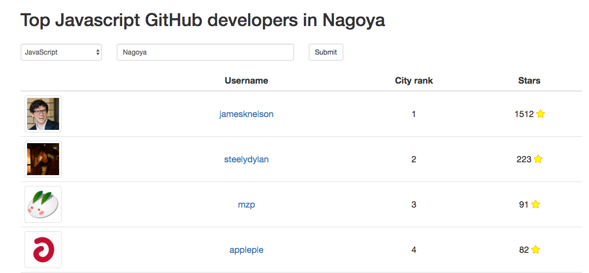

## JavaScriptライブラリを
## JavaScriptライブラリを
配布する際に
気をつけていること
有限会社アップルップル 堀 悟大
## 自己紹介
### 有限会社アップルップル

### steelydylan
## 業務
- JSライブラリの開発
- a-blog cmsのフロント周りの担当。
- Web制作の受託案件
## 今回お話すること
- JavaScriptライブラリを公開するにあたって心がけていること
## 心がけていること
- 事前調査
- カスタマイズしやすい設計にすること
- 他のJSとの違いを明確にサイトに記載すること
- 自社サイトやソーシャルで情報発信
## 事前調査
- 類似するようなJSが公開されていないか？
- 公開されているJSのカスタマイズ製
## オフキャンバス
サイドから出現するメニュー
## 事前調査
### オフキャンバスのライブラリ
- Off.canvas
- uikitのoffcanvas
- fundationのoffcanvas
- メニューを設置するHTMLの位置の制約
- アニメーションの美しさの問題
- アクセシビリティの問題
- ヘッダーが固定できない問題
## hiraku.js
[https://www.appleple.com/blog/javascript/hiraku-js.html](https://www.appleple.com/blog/javascript/hiraku-js.html)
ドローワーメニュー/オフキャンバスメニューを出現させるためのjQueryプラグイン
他のJSとの違い
- メニュー部分のHTMLをどこに配置してもいい。
- 美しいアニメーション
- アクセシビリティに対応
- ヘッダが固定できる。
## hiraku.js
柔軟なカスタマイズ製
## hiraku.js
両サイドからの開閉
## hiraku.js
メインキャンパスの固定
### 情報発信
他のJSライブラリとの違いをページの先頭の方でいつも明確に記述するように心がけている。
[https://www.appleple.com/blog/javascript/hiraku-js.html#01](https://www.appleple.com/blog/javascript/hiraku-js.html#01)
### カスタマイズ方法の掲載
[https://www.appleple.com/blog/javascript/hiraku-js.html#03](https://www.appleple.com/blog/javascript/hiraku-js.html#03)
### githubページの作成
海外の人にも使ってもらえるように英語版のページも用意
[https://appleple.github.io/hiraku/](https://appleple.github.io/hiraku/)
### Echo JSへの宣伝
JavaScriptに関するニュースなどを載せることができる掲示板のようなところ
[http://www.echojs.com/](http://www.echojs.com/)
### 自社サイトに掲載
[https://www.appleple.com/blog/javascript/](https://www.appleple.com/blog/javascript/)
### ソーシャルでの宣伝
TwitterやFacebookなど
## 公開後の反響
## 公開後の反響
Twitter
## 公開後の反響
Git Awards

## smart-photo.js
現在開発中
[http://rawgit.com/appleple/smartPhoto/master/test/vanilla.html](http://rawgit.com/appleple/smartPhoto/master/test/vanilla.html)
- デバイスに応じて最適な画像サイズで表示
- ジャイロセンサー使用
### ソースコードを2つ用意
- npm用のソースコード
- scriptタグとして読み込めば使えるソースコード
ライブラリ開発の際に参考になるサイト
[https://www.webprofessional.jp/design-and-build-your-own-javascript-library/](https://www.webprofessional.jp/design-and-build-your-own-javascript-library/)
## まとめ
- JavaScriptライブラリを開発しています
- サイトに組み込みやすい柔軟な設計にしています
- 事前調査をしっかりしています
- 他のJSとの違いを明確にサイトに記載しています
## よければ使ってみてください！
## Nagoya.jsやってます！
[https://nagoya-js.github.io/](https://nagoya-js.github.io/)
## デザイナー募集中
詳しくは配布チラシより！